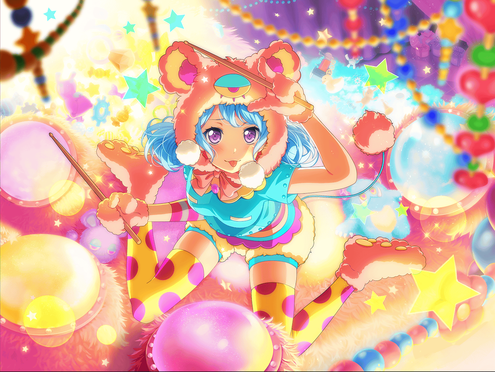

CiRCLE カフェテリア
花音
ちょっと早く来すぎちゃった……
カフェでちょっと待ってようかな？
あ、新メニュー追加されたんだ……♪
まりな
あれ？ 花音ちゃん
花音
まりなさん、{{userName}}さん、こんにちは。
休憩ですか？
まりな
うん。
さっき休憩に入ったところ。
花音ちゃんも時間あるなら、一緒にお茶しない？
花音
いいんですか？
ありがとうございます
まりな
そう言えば聞いたよ。この前、大変だったんだって？
花音
この前……
あ、『ふわキャラ選手権』のことですね
花音
そ、そうなんです。すごく大変でした……
最初は花咲川からの出場は、ミッシェルだけだって
聞いてたんですけど……
花音
実はライバルがいたんです。
『マリー・アンドロメダ』っていうキグルミで……
すっごく足が速くて、ビックリしちゃいました！
花音
勝負はえっと……走り幅跳びと、風船配りと……
ダンスとマラソン……うん、これで全部だと思います。
実は私も、少しミッシェルに協力したんですよ
花音
風船配りの時に、マーチングスネアを叩いたんです。
たくさんの人がいたから、恥ずかしかったんですけど……
ミッシェルに頑張ってほしくて、私も頑張りました
まりな
マーチングスネア？ あはは。予想以上だね……
花音
はい……
でも、すっごくいい思い出になったと思います。
まぁ、その……恥ずかしかった、ですけど……
まりな
あはは……
にしてもあのミッシェルにライバルかー。
『マリー・アンドロメダ』ねぇ……
花音
……実は……
花音
……マリーの中に入ってたの、
はぐみちゃんなんです
花音
知った時はすごくびっくりしましたし、
…………同時に、ちょっと不安でした
まりな
不安？
どうして？
花音
えっと、その……
はぐみちゃんってすごく優しい子だと思うんです
花音
だから、負けたほうの気持ちを考えちゃって、
全力で戦ったりできないんじゃないかなって……
花音
でも、それは私の勝手な想像でした。実際のはぐみちゃんは、
優しさと同じくらいの強さを持ってて……ミッシェルに、
全力でぶつかってましたから
花音
だからこそ、ミッシェルとマリー、２人で商店街を
盛り上げていくってことになったんだと思います
花音
あの日のはぐみちゃんと美咲ちゃん、本当にステキで……
いつも以上に、キラキラしてました
花音
私はミッシェルの応援で行っただけで、
選手権には出てないんですけど……それでも、
一緒に行けてよかったです
花音
……って、私ばっかり話しちゃってすみません
まりな
ううん、気にしないで。ふわキャラ選手権、
軽く話は聞いてたけど詳しいことは知らなかったし……
実は結構気になってたんだ。キミも、そうだよね？
花音
よ、良かったぁ……
まりなさん、{{userName}}さん、聞いてくれて
ありがとうございました
花音
練習まで、時間はもう少しありますけど……
２人の休憩時間がつぶれちゃいますし、
私、そろそろ行きますね
まりな
そんな気を遣わなくてもいいのに
花音
いえ、休憩は大事ですから……！
それじゃあ、またあとで。
今日も、お世話になります